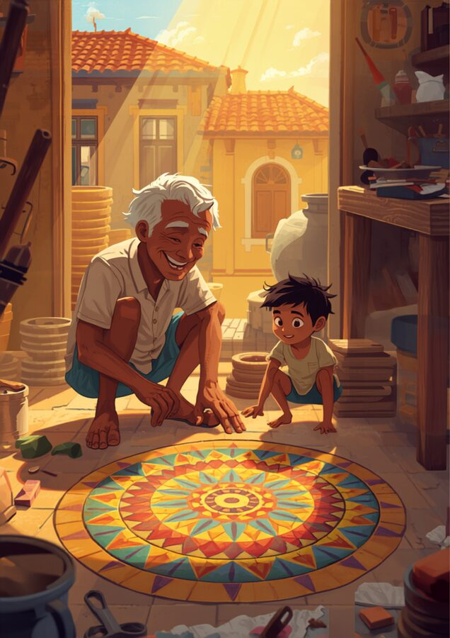

🎨 Os mosaicos de Seu Benedito
No centro histórico de São Luís, no Maranhão, o sol bate na fachada dos antigos casarões e reflete um festival de cores. Ali vive o Seu Benedito, um dos últimos mestres ladrilheiros da região. Ele aprendeu com seu pai a arte secular de fabricar e assentar ladrilhos hidráulicos, um patrimônio cultural vibrante e muito amado no Brasil.
Hoje é um dia especial: o pequeno Tiago, neto de Seu Benedito, está na oficina ajudando a organizar as peças de cerâmica. Ele fica fascinado com a forma como os triângulos coloridos pintados nas peças se encaixam perfeitamente ao redor de um ponto no piso, sem deixar nenhuma fresta ou espaço vazio.
"Vovô, como os triângulos sabem exatamente como se encaixar sem brigar?", pergunta Tiago, rindo. Seu Benedito coloca as mãos sujas de argila nos ombros do neto e explica: "Cada triângulo, Tiago, carrega um segredo dentro de suas três pontas. Quando você junta as três curvas de suas pontas em uma linha reta, elas formam exatamente metade de uma volta completa. É essa harmonia invisível de 180° que permite que a gente crie esses tapetes coloridos no chão da nossa cidade."

➕ A soma dos ângulos internos
Em qualquer triângulo — seja ele equilátero, escaleno, acutângulo ou obtusângulo — a soma das medidas dos três ângulos internos é sempre a mesma:
Isso significa que, se você já sabe dois dos três ângulos, consegue descobrir o terceiro sem medir nada — basta subtrair a soma das medidas dos dois ângulos de 180°.
Para saber mais: além da demonstração com o recorte de papel, existe uma prova geométrica formal (usada em livros como o de Dolce e Pompeo): traçando por um vértice do triângulo uma reta paralela ao lado oposto, os ângulos alternos internos mostram exatamente por que os três ângulos, somados, formam um ângulo raso (180°) sobre essa reta.
✏️ Vamos treinar
🖐️ Arraste e confirme os 180°
Arraste os vértices do triângulo abaixo. Não importa o formato: a soma dos três ângulos internos nunca sai de 180°.
Soma: –
Missão — Complete o terceiro ângulo
Digite dois ângulos de um triângulo. Vamos calcular o terceiro.
🎨 Ângulos que se encaixam na sua cultura
Ladrilhos hidráulicos, mosaicos e a Arte Kusiwa — sistema gráfico do povo Wajãpi (Amapá), reconhecido pela UNESCO como Patrimônio Cultural Imaterial da Humanidade — usam ângulos que se encaixam perfeitamente ao redor de um ponto, sem sobras nem buracos.
Encontre um padrão geométrico do seu contexto que se encaixa perfeitamente
Descreva o padrão e proponha uma explicação: como os ângulos das peças se somam para fechar perfeitamente ao redor de cada ponto de encontro?
✅ Antes de seguir em frente
Marque com sinceridade. Isto não vale nota — é um mapa para você (e seu professor) saberem onde reforçar.
🎮 Complete o triângulo
Você sabe dois ângulos do triângulo. Descubra o terceiro antes de virar a rodada!
Qual é o ângulo que falta?